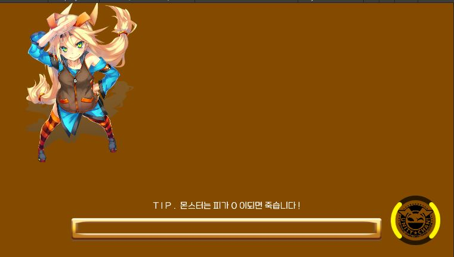

역할 연기 게임. 흔히들 'RPG 게임'이라는 표현을 많이 쓰는데 RPG의 G가 Game의 약자이기 때문에 RPG 게임이라고 하면 겹말이 되어버린다. 한국에서는 흔히 자신의 캐릭터를 '육성하는 게임'으로 인식되는 장르다. 외국에서 사용하는 RPG라는 단어는 한국과는 사뭇 다른 느낌으로, 말 그대로 어떤 역할을 연기하는 모든 게임을 통틀어서 말하는 단어로서 사용된다 원래 롤플레잉 게임은 주로 게임 마스터의 주관아래 플레이어들이 각각 캐릭터들을 맡아 연기하면서 즐기는 보드 게임, 즉 TRPG를 뜻했다. 완전히 게임 마스터 맘대로는 아니고 상황과 규칙에 따라 주사위를 굴려 결과를 내는 등 복잡한 게임 룰이 쓰이기도 한다. 다른 어떤 파티 게임보다도 마스터(=게임 관리자)의 역량이 중시되는 엔터테인먼트로, 멤버들을 적절히 몰입시키는 입담과 공정한 룰 준수 기준, 한명 한명에게 신경 써주는 섬세함, 적절한 시나리오 제작 능력 등이 받쳐주지 않으면 게임이 성립되기 힘들다. 그리고 훌륭한 던전 마스터에 의하여 유도된 플레이어의 적극적인 참여, 이로 인한 창발적 전개라는 요소는 새로운 엔터테인먼트 양식을 탄생시켰기 때문에 RPG계에는 이런 말도 있을 정도다.
보통은 턴제로 돌아가나 디아블로 시리즈처럼 실시간 액션으로 전투가 치뤄지면 액션 알피지라고도 한다. 약자로 ARPG. 또...파이어 엠블렘이나 히어로즈 오브 마이트 앤 매직는 또 전략시뮬레이션+RPG라고 해서 SRPG. 또 와우같이 대규모로 멀티플레이로 하는 방식은 MMORPG. 온라인 게임이 좀 심하게 강세인 대한민국에서는 MMORPG와 동의어로 취급되기도 하는 단어이기도 하다. 넓게 보면 슈퍼 마리오 시리즈, 리그 오브 레전드, 오버워치 등의 캐릭터 게임이나 건설&경영 시뮬레이션도 역할 수행 게임은 맞지만, 이를 RPG라고 부르는 것에는 어폐가 많을 것이다. 하지만 캐릭터 게임 중에서도 애니팡, 프렌즈팝콘 등의 게임은 캐릭터를 조종하는 게임은 아니기 때문에 롤플레잉 게임의 기준에는 부합하지 않는다. 역할을 수행하는 게임이다 보니 애니메이션 소재와 궁합이 매우 좋다. 때문에 애니메이션 원작 RPG를 흔히 볼 수 있고 그 반대의 경우도 많은 편이다. 캐릭터의 성장이 대표적인 장르적 클리셰로 액션 게임에도 경험치-레벨업 개념이 있는 경우 RPG적인 요소를 도입했다 하는 식으로 쓰이는 단어이기도 하다. 워크래프트 3같은 경우 대표적인 RPG개념을 도입한 전략 게임으로 불린다. 요즘은 웬만한 게임은 거의 다 퓨전이다. 좀 독특하게도, 샌드박스형이거나 그에 가까운 게임 중에서 RP 전용 모드나 맵이 제작되어 사용되기도 한다. 스타크래프트나 워크래프트 등의 유즈맵들, 게리모드의 모드, GTA SA의 모드 등이 대표적인 사례.